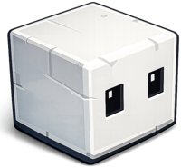
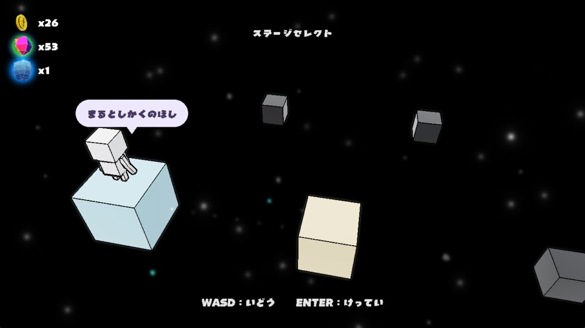
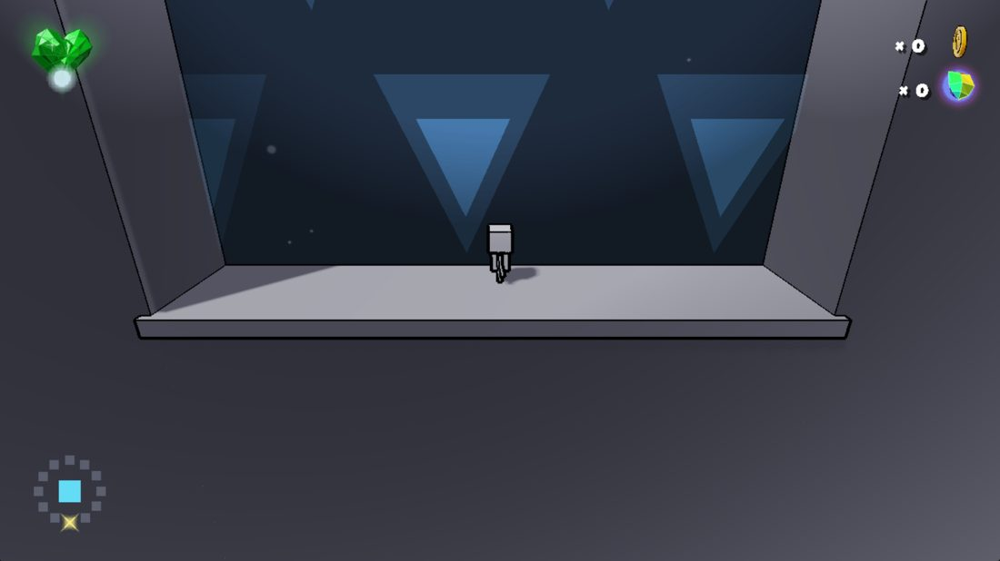
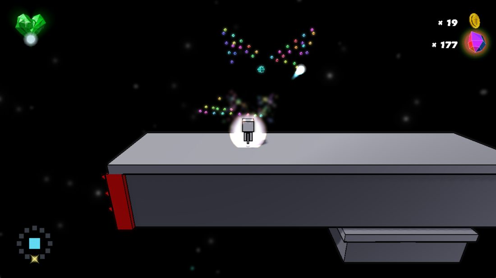
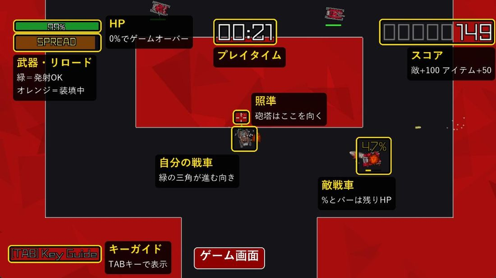
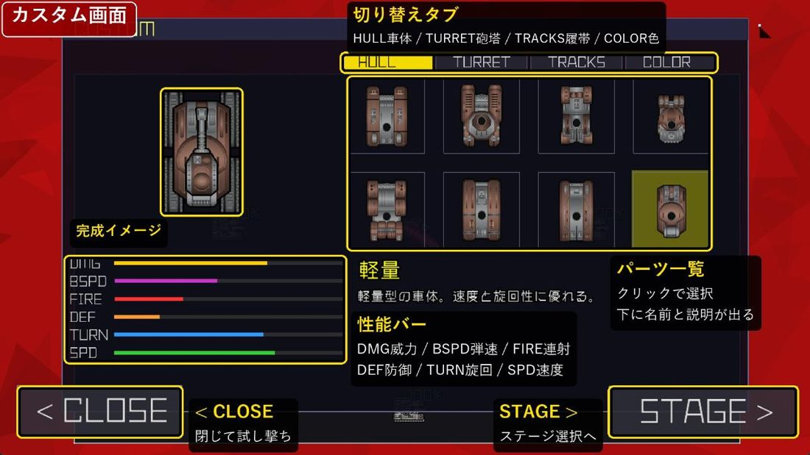

摩擦円だけでは、ラインが膨らまない
アクセルを踏み増しても車の角度が深くなるだけで、走行ラインが外へ広がりませんでした。摩擦円は縦力と横力の配分しか決めないためです。スリップ比がピークを超えたら摩擦係数そのものを落とすようにして、狙った挙動になりました。
ゲームプログラマー志望
仕組みから、ゲームを作る。
DirectX 11 と C++ で、車両物理・通信・重力・当たり判定を自分の手で実装しています。神戸電子専門学校でゲーム開発を学んでいます。
BUILT TO SLIDE.
CHASE CONTROL, NOT GLORY.
峠のドリフトゲーム
トゥーン調の峠を、FR・6速MTの車でドリフトして走るゲームです。学校配布の DirectX 11 フレームワークの上に、車両物理・通信・サウンド・UI を自作しました。マルチプレイにも対応しています。
アクセルを踏み増しても車の角度が深くなるだけで、走行ラインが外へ広がりませんでした。摩擦円は縦力と横力の配分しか決めないためです。スリップ比がピークを超えたら摩擦係数そのものを落とすようにして、狙った挙動になりました。
位置を直線でつなぐと、旋回中の車がコースの内側を通って見えます。速度を接線に使うエルミート補間に変え、姿勢はクォータニオンの Slerp でつなぎました。受信側は 0.12 秒遅らせて描き、いつも「次の位置」を持たせています。
計測パネルを自作して区間ごとの時間を測ると、コースの 3,905 個のメッシュノードがそのままドローコールになっていました。ノード単位の視錐台カリングと、影を距離で切る処理で減らしました。

上下も左右も関係ない。惑星の“重力”を味方にして冒険する
星から星へ渡り歩く、2.5D の重力アクションです。丸い星はぐるっと一周歩けて、箱の星は角を越えると「上」の向きが変わります。パラソルで滑空したり、ゾーンの中で重力を反転させたりしながら、ゴールを目指します。



球と形状の「押し出し」で解決します。地形のローカル空間で解くので、回転した箱（OBB）も同じコードで扱えます。
星ごとに「上方向」を決め、移動・ジャンプ・カメラのすべてがそれを基準に動きます。強さは距離の2乗に反比例し、重力圏の端でなめらかに 0 になります。
追従、重力に合わせた回転、部屋ごとの切り替えに、揺れ・傾き・ズームの演出を重ねています。
裏面を押し出す2パスのアウトライン、重力の向きに合わせて生える草、トライプラナーUV を、学校のフレームワークに追加しました。
アニメ、エフェクト、軌跡をすべて経過時間で動かしています。フレームレートを変えても同じ速さで動きます。
ImGui でステージエディタを作り、配置を CSV に保存します。設定メニューから、新しい版を自動でダウンロードして適用できます。

車体と砲塔を組み合わせた自分だけの戦車で、敵地を突破するトップダウンのシューティングです。敵を倒すと、その敵の武器が落ちます。

神戸電子専門学校でゲーム開発を学んでいます。1年の夏に、基本図形だけのゲームを初めて1人で作り切りました。1年のチーム制作「Tactics of Liberty」では UI まわりを担当し、デジタルワークスに出展しました。
東京ゲームショウに行ったことをきっかけに、ゲーム業界で働くことを本気で目指すようになりました。2年では個人で3本を作り、2日間のゲームジャムにも参加しました。
物理や通信、エディタなど、ゲームを動かす仕組みを作るのが好きです。機能を足しやすく、読みやすいコードを意識しています。
C++ / DirectX 11 / HLSL / ImGui / Git